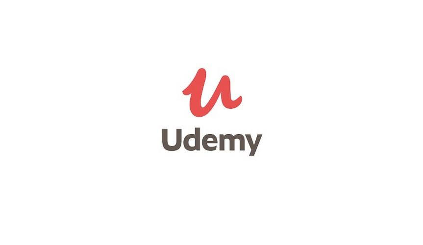

Rodrigo Faustino
Rodrigo Faustino
Algumas habilidades:
PHP
90%
JAVASCRIPT
85%
JAVA
75%
Estudando Python
5%
MySQL
75%
MSSQL Server
75%

 rodrigofaustinopsy
rodrigofaustinopsy rodrigofaustinopsy
rodrigofaustinopsyMEUS PROJETOS
Aqui estão alguns dos meus últimos trabalhos .
Clique nas imagens para aumentá-las


CURSOS
Aqui estão alguns dos cursos com uma ferramenta que acelera o desenvolvimento.
com esta ferramenta apenas com a noção de banco de dados voce desenvolve sistemas rapidamente
Cursos

sistema web do zero com PHPMaker
udemy Clique aquisem pré requisito minimo
2 sistemas web do zero com PHPMaker
hotmart Clique aquisem pré requisito minimo
CONSULTORIA EM PROJETOS
Caso tenha projetos feitos em PHP e queira uma integração ou suporte no desenvolvimento pode chamar para fazer parte do seu projeto por preço fixo por hora,
abaixo uns jquery que podem ajudar em seus projetos
Projetos à venda
Aqui estão alguns dos projetos que podem ser comprados